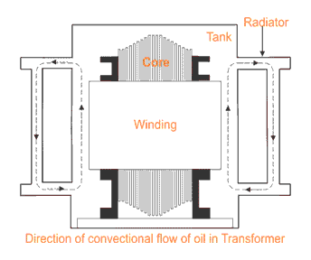
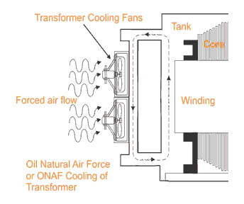
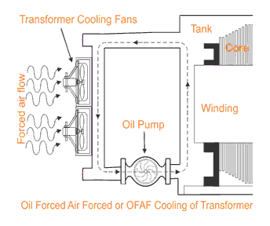

Transformer Cooling System and Methods
ONAN Cooling of Transformer
• ONAF Cooling
• OFAF Cooling
• OFWF Cooling
• ODAF Cooling
• ODWF Cooling
The main source of heat generation in transformer is its copper loss or I2R loss. Although there are other factors contribute heat in transformer such as hysteresis & eddy current losses but contribution of I2R loss dominate them. If this heat is not dissipated properly, the temperature of the transformer will rise continually which may cause damages in paper insulation and liquid insulation medium of transformer. So it is essential to control the temperature with in permissible limit to ensure the long life of transformer by reducing thermal degradation of its insulation system. In electrical power transformer we use external transformer cooling system to accelerate the dissipation rate of heat of transformer.There are different transformer cooling methods available for trans former, we will now explain one by one.
Different Transformer Cooling Methods
For accelerating cooling different transformer cooling methods are used depending upon their size and ratings. We will discuss these one by one below,

ONAN Cooling of Transformer
This is the simplest transformer cooling system. The full form of ONAN is "Oil Natural Air Natural". Here natural convectional flow of hot oil is utilized for cooling. In convectional circulation of oil, the hot oil flows to the upper portion of the transformer tank and the vacant place is occupied by cold oil. This hot oil which comes to upper side, will dissipate heat in the atmosphere by natural conduction, convection & radiation in air and will become cold. In this way the oil in the transformer tank continually circulate when the transformer put into load. As the rate of dissipation of heat in air depends upon dissipating surface of the oil tank, it is essential to increase the effective surface area of the tank. So additional dissipating surface in the form of tubes or radiators connected to the transformer tank. This is known as radiator of transformer or radiator bank of transformer. We have shown below a simplest form on natural cooling or ONAN cooling arrangement of an earthing transformer below.

ONAF Cooling of Transformer
Heat dissipation can obviously be increased, if dissipating surface is increased but it can be make further faster by applying forced air flow on that dissipating surface. Fans blowing air on cooling surface is employed. Forced air takes away the heat from the surface of radiator and provides better cooling than natural air. The full form of ONAF is "Oil Natural Air Forced". As the heat dissipation rate is faster and more in ONAF transformer cooling method than ONAN cooling system, electrical power transformer can be put into more load without crossing the permissible temperature limits.
OFAF Cooling of Transformer
In oil forced air natural cooling system of transformer, the heat dissipation is accelerated by using forced air on the dissipating surface but circulation of the hot oil in transformer tank is natural convectional flow.

The heat dissipation rate can be still increased further if this oil circulation is accelerated by applying some force. In OFAF cooling system the oil is forced to circulate within the closed loop of transformer tank by means of oil pumps. OFAF means "Oil Forced Air Forced" cooling methods of transformer. The main advantage of this system is that it is compact system and for same cooling capacity OFAF occupies much less space than farmer two systems of transformer cooling. Actually in oil natural cooling system, the heat comes out from conducting part of the transformer is displaced from its position, in slower rate due to convectional flow of oil but in forced oil cooling system the heat is displaced from its origin as soon as it comes out in the oil, hence rate of cooling becomes faster.
OFWF Cooling of Transformer
We know that ambient temperature of water is much less than the atmospheric air in same weather condition. So water may be used as better heat exchanger media than air. In OFWF cooling system of transformer, the hot oil is sent to a oil to water heat exchanger by means of oil pump and there the oil is cooled by applying sowers of cold water on the heat exchanger's oil pipes. OFWF means "Oil Forced Water Forced" cooling in transformer.
ODAF Cooling of Transformer
ODAF or oil directed air forced cooling of transformer can be considered as the improved version of OFAF. Here forced circulation of oil directed to flow through predetermined paths in transformer winding. The cool oil entering the transformer tank from cooler or radiator is passed through the winding where gaps for oil flow or pre-decided oil flowing paths between insulated conductor are provided for ensuring faster rate of heat transfer. ODAF or oil directed air forced cooling of transformer is generally used in very high rating transformer.
ODWF Cooling of Transformer
ODAF or oil directed water forced cooling of transformer is just like ODAF only difference is that here the hot oil is cooled in cooler by means of forced water instead of air. Both of these transformer cooling methods are called forced directed oil cooling of transformer
 by
by